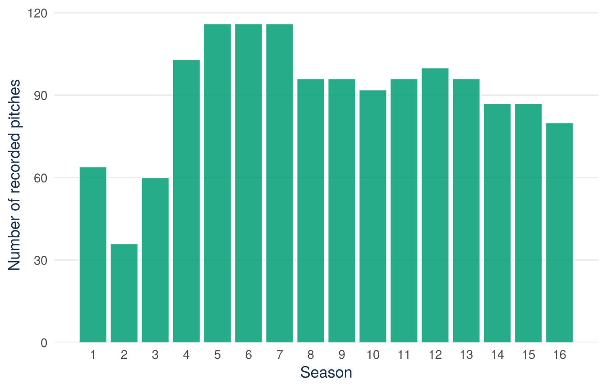
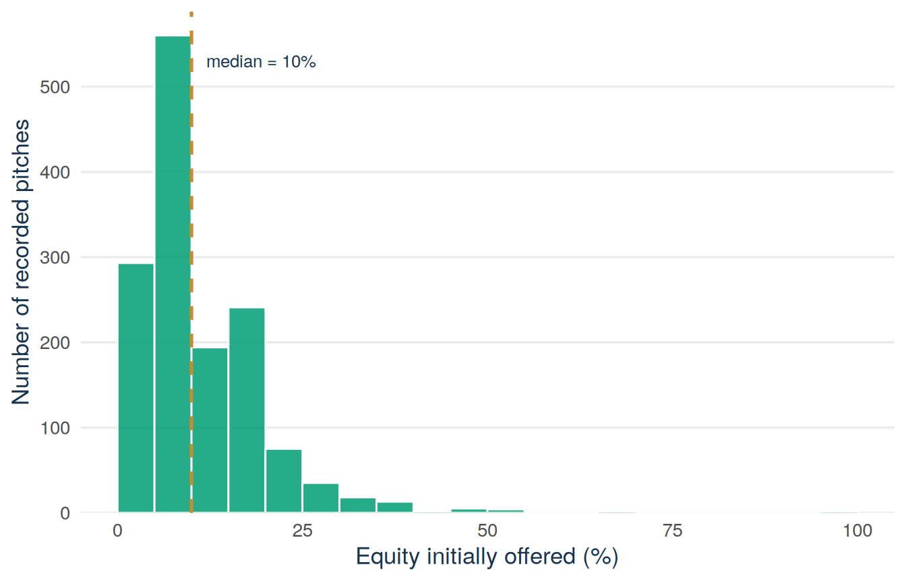
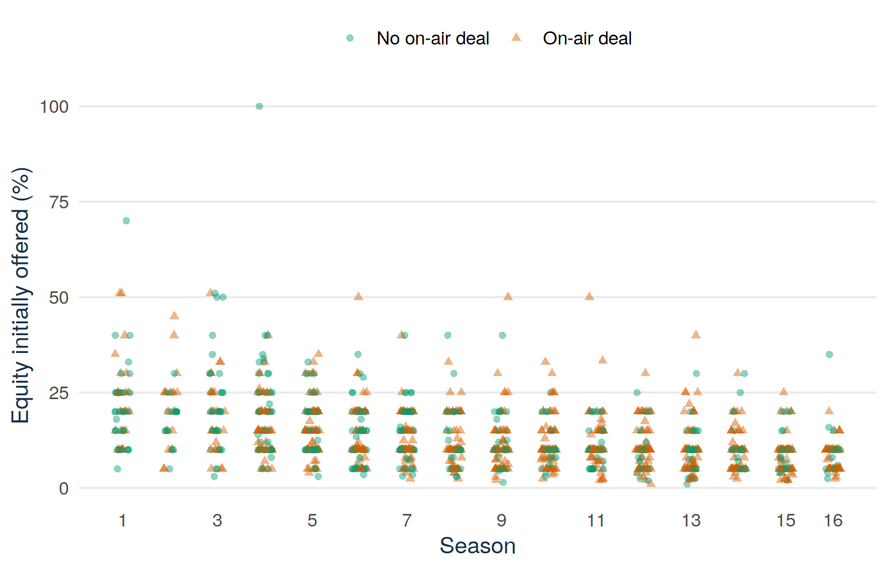
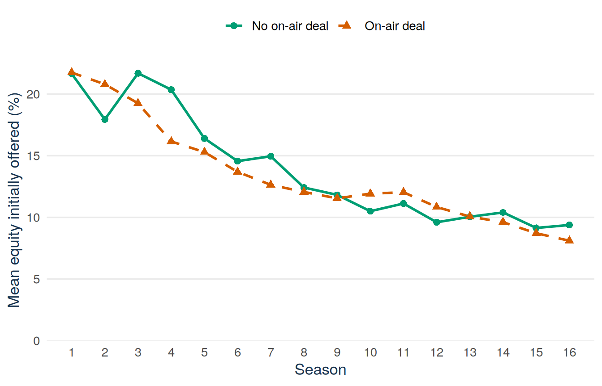
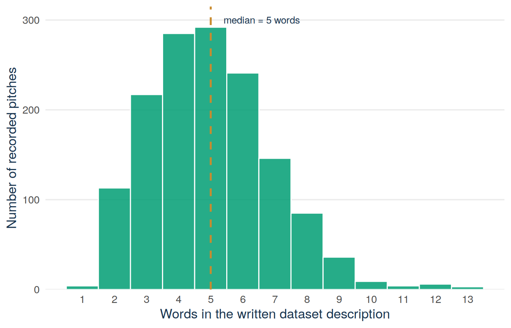

sharks <- read.csv("data/shark_tank_teaching.csv",
stringsAsFactors = FALSE)
dim(sharks)
names(sharks)
head(
sharks[c(
"pitch_id", "startup_name", "season", "industry",
"pitcher_gender_group", "deal_on_show"
)],
3
)Lecture 1: Introduction to data analysis
By the end of Lecture 1, you can
- organise a reproducible R analysis and check work done with AI help
- tell types of variables apart and spot selection bias in a sample
- inspect a real dataset and describe one variable with tables and charts
- read a histogram by hand and locate the interval holding the median
Driving question
Shark Tank turns a business decision (fund this venture or not) into recorded data: 1,441 pitches, each with an amount asked for, an equity offer, and an outcome. Investors, founders, and analysts use records like these to see what works.
The Shark Tank file records 1,441 televised pitches. What can this dataset tell us about entrepreneurship, and what can it never tell us?
Before class
Do all the preparation below before class.
Read. Read How to use this book at the start of this book and locate the sections called Before class, Lecture material, and After class in this chapter.
Set up. Open RStudio by opening an R project. Create a new script and save it before you write code. Then download shark_tank_teaching.csv and place it in a folder called data inside your project. Keep the downloaded file unchanged. Run the following commands and bring the output to class:
Predict. Answer this question before you come to class: what do you think one row in this dataset represents? You find the answer in the lecture material. It is fine if you change your answer later.
R refresher
You used scripts, CSV files, data frames, summaries, and plots in Programming for E&BI. If the commands above feel unfamiliar, revisit its chapters on R scripts, reading CSV files, and summarising data frames.
If percentages, units, or graph axes are unfamiliar, review Mathematics Refresher: numbers, proportions, percentages, and units.
Read before class: working reproducibly
Reproducible scripts
A reproducible script recreates the analysis in a new R session. It does not need objects that you created earlier at the Console.
Use these habits from the start:
- open the project rather than changing the working directory with
setwd() - keep downloaded data unchanged
- use relative paths such as
data/shark_tank_teaching.csv - write every step (importing, checking, transforming, plotting, and modelling) in scripts
- give objects meaningful names
- keep code and written interpretation together
- restart R and run the complete script before you share the analysis.
The analysis cycle
Data analysis moves through six steps, and you often go back to an earlier step:
- Ask a focused question.
- Define the unit (what one row of the data stands for) and decide how to measure each idea.
- Obtain or create the data and write down where they come from.
- Inspect and check the data before calculating.
- Summarise and visualise patterns.
- Interpret the result in context and state its limits.
Read before class: the variables in the Shark Tank file
One row of the file is one recorded pitch. The table lists all 19 variables of the file, in the order of its columns. Have the table open when you run the code above.
The Type column uses four words that the lecture material defines in the section From ideas to variables. For now, read them like this. A categorical variable records a group. A discrete or continuous variable records a number. An identifier only labels a row.
| Variable | Meaning | Type |
|---|---|---|
pitch_id |
number that labels the row | identifier |
startup_name |
name of the venture or product | identifier (a name) |
season |
television season, 1–16 | discrete, ordered in time |
episode |
episode number within the season | discrete, labels the episode |
industry |
industry category given by the source | categorical |
business_description |
short written description of the venture, written by the source of the data | text, not analysed in this course |
description_words |
number of words in business_description |
discrete (a count) |
pitcher_gender_group |
all_women, all_men, mixed, or unknown, as classified by the source |
categorical |
women_represented |
1 for all_women or mixed, 0 for all_men, missing for unknown |
categorical with two groups, stored as 0/1 |
multiple_entrepreneurs |
1 if more than one entrepreneur presented, 0 otherwise | categorical with two groups, stored as 0/1, with missing values |
pitcher_state |
US state of the entrepreneurs, empty when the source does not report it | categorical |
ask_amount_usd |
amount of money requested | continuous, in USD |
equity_offered_pct |
ownership share initially offered | continuous, in percent |
requested_valuation_usd |
company value implied by the request | continuous, in USD |
deal_on_show |
1 for an on-air deal, 0 otherwise | categorical with two groups, stored as 0/1 |
deal_amount_usd |
amount of money in the agreed deal | continuous, in USD, missing without a deal |
deal_equity_pct |
ownership share in the agreed deal | continuous, in percent, missing without a deal |
deal_valuation_usd |
company value implied by the agreed deal | continuous, in USD, missing without a deal |
number_sharks_in_deal |
number of sharks who joined the deal, 1–5 | discrete (a count), missing without a deal |
Lecture material
This section shows how a question becomes data, how to check a dataset, and how to describe one variable. It uses two datasets: a short class survey and the Shark Tank file.
Start with a founder’s question
How many students in your year want to start a business in the next ten years? And how many of them would put real money at risk today? A short survey can collect the answers. Founders ask the same kind of question about their market every week: how many people want this, and how do I know? This lecture shows how such a question becomes data, and what the data can and cannot tell you.
How the course works
Every lecture follows the same cycle: you prepare before class, take part in the lecture, and practise after class. The lecture covers the most important parts of each chapter. This text has the full material, with every step, every example, and all the code. The How to succeed in this course page shows the weekly plan, day by day.
AI as a fallible assistant
AI systems write answers that sound right. They do not guarantee that a calculation, source, or interpretation is correct. Use:
Attempt → Ask → Verify → Explain
- Attempt the question and identify where you are stuck.
- Ask for a hint, a question that helps you find the problem, a counterexample, or a review of your code.
- Verify every claim against the data, R output, course notation, and reliable sources.
- Explain the result in your own words and ask for feedback on that explanation.
Do not share confidential or personal material, or exam material that you may not share. You stay responsible for every claim that you hand in.
Collecting our own data
The class survey is short and anonymous. It has three questions. Together, the answers of all students form a small dataset.
A choice with money at risk
The first question is: imagine that you receive EUR 100 and make one choice.
| Choice | Amount placed at risk | Possible final amounts |
|---|---|---|
| Keep it | EUR 0 | EUR 100 for certain |
| Split it | EUR 50 | EUR 50 or EUR 150, each with 50% chance |
| Go all-in | EUR 100 | EUR 0 or EUR 200, each with 50% chance |
All three choices have the same average payoff if the choice is repeated many times: EUR 100. The choices differ only in how uncertain the result of a single choice is.
The second question is:
How do you see yourself in general? Use 0 for “not at all willing to take risks” and 10 for “very willing to take risks.”
The third question asks for your current belief:
What is the probability that you will start or co-found a business at least once during the next ten years?
The answers can be shown in one graph. It places the general willingness to take risks on the horizontal axis and the probability of founding a business on the vertical axis. One anonymous point represents one student. Before you see such a graph, predict its shape: will students who are more willing to take risks also report a higher probability of founding a business?
From ideas to variables
The survey turns three ideas into data. Five terms describe how this works. A characteristic is the feature we want to know about, here a student’s risk attitude. A variable is a well-defined rule for measuring a characteristic, here the amount of 0, 50, or 100 euros that the student puts at risk. A unit, also called an observational unit, is one member of the group we study, here one student. A value is one possible result of the measurement. An observation is the value recorded for one unit. For example, the variable amount_at_risk has the three values 0, 50, and 100, and the observation for one student may be 50.
In formulas, from Lecture 2 on, a variable is written with a capital letter, such as \(X\), and its values with the matching lower-case letter, \(x\). Here \(X\) stands for the rule of measurement, which is the same for every unit, and \(x\) for a number that the rule produced for one unit.
Variables come in different types. The type determines which tables, graphs, and calculations make sense.
Definition
Types of variables. The examples are from the Shark Tank file and the class survey.
- Categorical. The values are groups without an order. Example:
industry. With only two groups the variable is called binary and is often stored as 0 and 1, as indeal_on_show. - Ordinal. The values are groups with an order, but the steps between them have no fixed size. Example: the answer from 0 to 10 to the second survey question (
risk_willingness). The Shark Tank file has no ordinal variable. - Discrete. The values are separate numbers, usually counts. Example:
number_sharks_in_deal. - Continuous. The values are numbers that can lie anywhere in a range. Example:
equity_offered_pct. - Identifier. The value only labels a unit. Calculating with it has no meaning. Example:
pitch_id.
Discrete and continuous variables are together called quantitative, because their values are numbers that count or measure something. The class survey has one variable of each of four types:
| Variable | What is recorded | Type |
|---|---|---|
respondent_id |
anonymous row label | identifier |
amount_at_risk |
0, 50, or 100 euros | discrete |
risk_willingness |
one selected point from 0 to 10 | ordinal, often analysed as a number |
founder_probability |
belief from 0% to 100% | continuous, stored as a rounded value |
Risk attitude is an idea that cannot be observed directly. The money choice and the 0–10 answer are two imperfect measurements of it. The two measurements may disagree for three reasons. Risk taking depends on the situation. An imagined choice differs from a choice with real money. Also, people do not judge themselves perfectly. One answer does not show a fixed personality type.
Sample and target population
Data almost never cover everyone we want to know about. Three terms separate the units that we observed from the units that the question is about.
Definition
Population. The complete set of units about which a question is asked.
Sample. The part of the population that is observed.
Random sample. A sample drawn so that every unit of the population has the same chance of being drawn.
A population is usually too large to measure every unit, so we work with a sample. Inferential statistics asks what a sample can tell us about the population. Lectures 7 to 10 cover it.
In the class survey, the sample consists of the students who are present and respond. The population we want to learn about is called the target population. It could be any of these five groups:
- the responding students
- everyone attending the lecture
- all students enrolled in QM Basic
- all first-year business students in the Netherlands
- all young adults in the Netherlands.
Check: which of the five possible populations can our responses describe directly?
Only the first: the responding students. For the other groups (absent classmates, other QM Basic students, Dutch first-year students, young adults) we would need assumptions, because attendance and participation were not random. The data describe the respondents. They do not automatically represent larger groups.
Sampling variability versus selection bias
A sample can differ from its population for two reasons. Do not mix them up:
- Sampling variability: even a random sample can contain an unusual number of students who are very willing to take risks, purely by chance. Larger random samples usually reduce this chance variation.
- Selection bias: a sample of people who were easy to reach can systematically leave out certain people. Collecting more responses from the same selected group does not remove that bias.
Example 1.1 (Worked example: two scenarios) Scenario 1. A researcher draws 40 students at random from the list of all students enrolled in the programme. By chance, the sample contains an unusually large number of students who chose “go all-in.”
Scenario 2. A student shares a survey about founding a business in the group chat of the entrepreneurship club, and 400 members respond.
Scenario 1 is sampling variability. The selection was random, so the unusual result is chance variation, and a larger random sample would usually reduce it. Scenario 2 is selection bias. Club members are systematically more interested in founding than the average student. Collecting 4,000 responses from the same chat would not remove this bias. It would only give a more precise answer to the wrong question.
A random sample of Dutch students would require a clear definition of the population, a list of all its members, and random selection from that list. Even then, some students would not answer, and answers can be imprecise.
Meet the Shark Tank data
The class survey is a small dataset that a class creates itself. The rest of the course uses one larger dataset: the Shark Tank file. Examples and tasks that use the Shark Tank file carry this tag: .
Context and unit of observation
Shark Tank US is a television programme in which entrepreneurs present a venture or product to a panel of investors known as sharks. Entrepreneurs may ask for money in exchange for an ownership share. The investors question them, negotiate, and may announce a deal during the episode.
The recorded outcome is an on-air deal: the sharks and the entrepreneurs agree on a deal in front of the camera. It does not show that an investment was completed or that the venture later succeeded.
For a founder, the most interesting numbers in the file are valuations. A valuation is the value of the whole company that a request or a deal implies. Asking $100,000 for 10% of a company values it at $1 million. The file stores the valuation implied by the founder’s request in requested_valuation_usd. For pitches that ended in a deal, it stores the valuation implied by the agreed deal in deal_valuation_usd. The section “Summarise in context” below compares the two.
The teaching file contains 1,441 televised pitches from completed Seasons 1–16 and 19 variables. The Before class section lists all 19. The table below repeats the five that this lecture uses most.
| Variable | Meaning | Type |
|---|---|---|
deal_on_show |
1 for an on-air deal, 0 otherwise | categorical with two groups, stored as 0/1 |
season |
television season, 1–16 | discrete, ordered in time |
description_words |
number of words in the written description | discrete (a count) |
ask_amount_usd |
amount of money requested | continuous, in USD |
equity_offered_pct |
ownership share initially offered | continuous, in percent |
The gender variables describe the people who present the pitch, not necessarily every founder or employee. women_represented is not the share of women. For mixed teams, the source does not report how many women and how many men presented, so nobody can calculate that share.
Note carefully what description_words measures: the length of the written description in the source dataset, not anything about the pitch itself. It counts words typed by the person who created the source dataset, not words spoken on the show. The file also does not measure the spoken pitch, whether the investment was completed, or how the venture performed later.
Inspect and validate
Run the code below yourself, and read each output before you read its interpretation. All code on this page uses the data that the first line imports.
sharks <- read.csv("data/shark_tank_teaching.csv", stringsAsFactors = FALSE)
dim(sharks)[1] 1441 19str(sharks)'data.frame': 1441 obs. of 19 variables:
$ pitch_id : int 1 2 3 4 5 6 7 8 9 10 ...
$ startup_name : chr "AvaTheElephant" "MrTod'sPieFactory" "Wispots" "CollegeFoxesPackingBoxes" ...
$ season : int 1 1 1 1 1 1 1 1 1 1 ...
$ episode : int 1 1 1 1 1 2 2 2 2 2 ...
$ industry : chr "Health/Wellness" "Food and Beverage" "Business Services" "Lifestyle/Home" ...
$ business_description : chr "Ava The Elephant - Baby and Child Care" "Mr. Tod's Pie Factory - Specialty Food" "Wispots - Consumer Services" "College Foxes Packing Boxes - Consumer Services" ...
$ description_words : int 8 7 4 7 4 6 4 3 7 6 ...
$ pitcher_gender_group : chr "all_women" "all_men" "all_men" "all_men" ...
$ women_represented : int 1 0 0 0 0 1 0 0 0 1 ...
$ multiple_entrepreneurs : int 0 0 0 0 0 0 0 0 0 0 ...
$ pitcher_state : chr "GA" "NJ" "NC" "FL" ...
$ ask_amount_usd : num 50000 460000 1200000 250000 1000000 500000 250000 500000 200000 100000 ...
$ equity_offered_pct : num 15 10 10 25 15 15 10 10 20 20 ...
$ requested_valuation_usd: num 333333 4600000 12000000 1000000 6666667 ...
$ deal_on_show : int 1 1 0 0 0 1 1 0 0 0 ...
$ deal_amount_usd : num 50000 460000 NA NA NA 500000 250000 NA NA NA ...
$ deal_equity_pct : num 55 50 NA NA NA 50 100 NA NA NA ...
$ deal_valuation_usd : num 90909 920000 NA NA NA ...
$ number_sharks_in_deal : int 1 2 NA NA NA 2 5 NA NA NA ...There are 1,441 rows and 19 columns. This answers the prediction from your preparation: one row represents one recorded televised pitch from Seasons 1–16 of Shark Tank US. In the words of this lecture, the unit is one pitch, and each of the 19 columns is one variable.
colSums(is.na(sharks)) pitch_id startup_name season
0 0 0
episode industry business_description
0 0 0
description_words pitcher_gender_group women_represented
0 0 7
multiple_entrepreneurs pitcher_state ask_amount_usd
427 0 0
equity_offered_pct requested_valuation_usd deal_on_show
0 0 0
deal_amount_usd deal_equity_pct deal_valuation_usd
559 559 559
number_sharks_in_deal
559 range(sharks$season)[1] 1 16Seasons run from 1 to 16. The four deal variables are missing for the 559 pitches without a deal, as expected. The source does not report multiple_entrepreneurs for 427 pitches, and seven records have no value for women_represented because their gender classification is unknown. Missing does not mean zero. These checks show that the recorded values are realistic. They do not show that the source recorded every pitch or measured every idea well.
Summarise in context
deal_count <- sum(sharks$deal_on_show)
pitch_count <- nrow(sharks)
deal_rate <- mean(sharks$deal_on_show)
c(
on_air_deals = deal_count,
recorded_pitches = pitch_count,
recorded_deal_rate = deal_rate
) on_air_deals recorded_pitches recorded_deal_rate
882.0000000 1441.0000000 0.6120749 A proportion is a count divided by the total. Here 882 of the 1,441 pitches reached a deal, and 882/1441 = 0.612, or 61.2%. For a variable stored as 0 and 1, the mean (the average) equals the proportion of 1s, so mean(sharks$deal_on_show) returns the same 0.612. A careful sentence is:
In this dataset, 882 of 1,441 recorded pitches (61.2%) reached an on-air deal.
This sentence names the dataset and outcome. It does not claim that a randomly selected entrepreneur has the same chance of a completed investment.
The second summary compares the valuation a founder claimed with the valuation of the agreed deal. In 8 of the 882 deals the recorded share for the sharks (deal_equity_pct) is 0%, so the deal implies no valuation. The code keeps the other 874 deals.
share_deals <- subset(sharks, deal_on_show == 1 & deal_equity_pct > 0)
nrow(share_deals)[1] 874median(share_deals$requested_valuation_usd)[1] 2e+06median(share_deals$deal_valuation_usd)[1] 1e+06mean(share_deals$deal_valuation_usd < share_deals$requested_valuation_usd)[1] 0.8146453The summary uses the median, the middle value of the ordered data: at least half of the values are at or below it. The section Reading a histogram by hand defines it in full. Among these 874 deals, the median claimed valuation (requested_valuation_usd) is $2.0 million. The median agreed valuation (deal_valuation_usd) is $1.0 million, half as much. In 81% of these deals the agreed valuation was below the one the founder claimed. QM Intermediate returns to this gap.
Describing one variable
Before comparing groups or fitting models, learn to describe one variable well. The right tool depends on the variable’s type.
Frequency tables and bar charts for discrete categories
An empirical distribution records how often values occur in a dataset. For a categorical or discrete variable, a frequency table gives counts and a relative-frequency table gives proportions:
season_counts <- table(sharks$season)
season_counts
1 2 3 4 5 6 7 8 9 10 11 12 13 14 15 16
64 36 60 103 116 116 116 96 96 92 96 100 96 87 87 80 round(prop.table(season_counts), 3)
1 2 3 4 5 6 7 8 9 10 11 12 13
0.044 0.025 0.042 0.071 0.080 0.080 0.080 0.067 0.067 0.064 0.067 0.069 0.067
14 15 16
0.060 0.060 0.056 The second table divides each count by the total. Season 5 has 116 of the 1,441 pitches, so its proportion is 116/1441 = 0.080, or 8.0%.
See the R code for this figure
library(ggplot2)
sharks <- read.csv("data/shark_tank_teaching.csv", stringsAsFactors = FALSE)
season_counts <- as.data.frame(table(sharks$season))
names(season_counts) <- c("season", "pitches")
season_counts$season <- as.integer(as.character(season_counts$season))
ggplot(season_counts, aes(x = season, y = pitches)) +
geom_col(fill = "#009E73", alpha = 0.85, colour = "white") +
scale_x_continuous(breaks = 1:16) +
scale_y_continuous(expand = expansion(mult = c(0, 0.05))) +
labs(x = "Season", y = "Number of recorded pitches") +
theme_minimal(base_size = 13) +
theme(
panel.grid.minor = element_blank(),
panel.grid.major.x = element_blank(),
plot.caption = element_text(colour = "#5B6976"),
axis.title = element_text(colour = "#17324D")
)
In Figure 1.1 the horizontal axis lists the discrete season categories. Each bar’s height on the vertical count scale is the number of recorded pitches in that season. Seasons 1 to 3 contain the fewest records and Seasons 5 to 7 the most (116 each), so an overall percentage gives the early seasons less weight.
Histograms for quantitative variables
For a quantitative variable, a histogram groups nearby values into intervals and counts how many observations fall in each.
The histogram below shows the equity initially offered (equity_offered_pct) in the Shark Tank file:
See the R code for this figure
library(ggplot2)
sharks <- read.csv("data/shark_tank_teaching.csv", stringsAsFactors = FALSE)
equity_median <- median(sharks$equity_offered_pct) # 10%
ggplot(sharks, aes(x = equity_offered_pct)) +
geom_histogram(breaks = seq(0, 100, by = 5),
fill = "#009E73", alpha = 0.85, colour = "white") +
geom_vline(xintercept = equity_median, colour = "#C98B2E",
linetype = "dashed", linewidth = 0.9) +
stat_bin(breaks = seq(0, 100, by = 5), geom = "text",
aes(label = ifelse(after_stat(count) >= 30, after_stat(count), "")),
vjust = -0.5, colour = "#17324D", size = 3.2) +
annotate("text", x = equity_median + 1.5, y = 470,
label = "median = 10%\n(counted in the bar that ends at 10)",
hjust = 0, vjust = 1, lineheight = 0.95,
colour = "#17324D", size = 3.4) +
scale_x_continuous(breaks = seq(0, 100, by = 5),
labels = function(x) ifelse(x %% 10 == 0, x, "")) +
scale_y_continuous(expand = expansion(mult = c(0, 0.08))) +
labs(x = "Equity initially offered (%)",
y = "Number of recorded pitches") +
theme_minimal(base_size = 13) +
theme(
panel.grid.minor = element_blank(),
panel.grid.major.x = element_blank(),
plot.caption = element_text(colour = "#5B6976"),
axis.title = element_text(colour = "#17324D"),
axis.ticks.x = element_line(colour = "#5B6976"),
axis.ticks.length.x = grid::unit(4, "pt")
)
Each bar counts the pitches within one interval of offered equity. Most initial offers are below 20%, while a small number are much larger. A shape like this, with most values small and a long tail to the right, is called right-skewed. Changing the interval width can show or hide patterns, so the analyst must choose the width with care.
Reading a histogram by hand
This section shows how to read a printed histogram by hand, without a computer. Read every graph with the same five-step sequence:
- Unit and variables. What does one observation represent, and what is on each axis, in which units?
- Scales. Read the axis scales, including where they start and how wide each interval is.
- One element. Describe one bar (or point) in a full sentence.
- Pattern. Describe the overall shape: where most values lie, whether the distribution is symmetric or skewed, whether there are outliers (single values far away from the rest).
- Limits. State one thing the graph cannot tell you.
A histogram also shows where the middle of the data lies and how wide the data are spread. Four terms describe this.
Definition
Median. The middle value of the ordered data: at least half of the observations are at or below it and at least half are at or above it.
Lower quartile \(Q_1\) and upper quartile \(Q_3\). At least one quarter of the observations are at or below \(Q_1\), and at least three quarters are at or above it. At least three quarters of the observations are at or below \(Q_3\), and at least one quarter are at or above it.
Interquartile range. \(\operatorname{IQR}=Q_3-Q_1\), the width of the middle half of the data.
With an odd number of observations the median is the single middle value. With an even number it is the average of the two middle values. R computes all four numbers for the equity initially offered (equity_offered_pct):
quantile(sharks$equity_offered_pct, c(0.25, 0.50, 0.75))25% 50% 75%
8 10 20 IQR(sharks$equity_offered_pct)[1] 12The lower quartile is 8%, the median is 10%, and the upper quartile is 20%. The interquartile range is \(20-8=12\) percentage points: the middle half of the offers lies between 8% and 20% equity.
Many pitches offer exactly 10% or exactly 20%. For this reason 59% of the offers (853 of 1,441) are at or below the median, and 89% (1,288 of 1,441) are at or below \(Q_3\). The table in the worked example below shows these counts. This is why the definitions say “at least”.
A simpler measure of spread is the range: the largest value minus the smallest value.
The worked example below finds the median from a printed histogram, without R.
Example 1.2 (Worked example: the five steps and the median interval) Apply the sequence to Figure 1.2.
- One observation is one recorded pitch. The horizontal axis is equity initially offered in percent, the vertical axis is the number of pitches.
- The horizontal axis runs from 0 to 100 in intervals of width 5. The vertical axis counts pitches.
- The tallest bar covers 5–10%: 560 pitches offered more than 5% and at most 10% equity.
- The distribution is strongly right-skewed: most offers are at or below 20%, and a few values spread out towards 100% (a thin tail).
- The histogram cannot say why so many offers lie in this range, and it hides the exact values inside each interval.
Finding the median interval. With 1,441 ordered observations, the median is the 721st value. Add bar counts from the left until the running total reaches 721:
| Interval (%) | Count | Cumulative count |
|---|---|---|
| 0 to 5 | 293 | 293 |
| above 5, up to 10 | 560 | 853 |
| above 10, up to 15 | 194 | 1,047 |
| above 15, up to 20 | 241 | 1,288 |
After the first bar only 293 observations are covered, not yet 721. After the second bar the running total is \(293+560=853\ge721\), so the 721st observation lies in the 5–10% interval: the median interval. (R confirms this: the exact median is 10%. This histogram counts the value 10% in the 5–10 bar, because each bar includes its right endpoint.)
Try it: locate the upper-quartile interval
Try this first with the student next to you. Use the definition of the upper quartile \(Q_3\) in the box above.
Step 1 (given). Three-quarters of 1,441 observations is about 1,081, so you are looking for the interval containing the 1,081st ordered value.
Step 2 (you). Extend the cumulative counts in the table of the worked example just above (equity initially offered, Example 1.2) until the running total first reaches 1,081.
Step 3 (you). Name the upper-quartile interval.
Check your answer
Up to and including the 10–15% bar, the cumulative count is \(293+560+194=1{,}047\), still below 1,081. Adding the 15–20% bar gives \(1{,}047+241=1{,}288\ge1{,}081\), so the upper quartile lies in the 15–20% interval. (R confirms this: the quantile() output above gives 20 for the upper quartile, on the upper edge of that bar.)
What these records can and cannot say
- The file describes 1,441 pitches that producers chose to film and air. It is not a sample of all start-ups, or even of all applicants.
- An on-air deal is made in front of the camera. It is not a completed investment, and it says nothing about later success.
- A variable measures only what it records.
description_wordscounts words in a written description, not anything about the pitch itself.
A causal claim says that changing one thing would change another, for example that offering less equity would get a founder a deal. Records like these show what went together. They do not show what would happen after a change.
What you can do with it: describe what happened in these pitches and form expectations about what happens on the show. For claims about founders in general, look for data that were collected for that purpose.
Answering the driving question
The dataset can tell us precisely what happened in these 1,441 recorded pitches, and anyone can repeat the calculation. Of these pitches, 882 (61.2%) reached an on-air deal. Most initial offers gave up at most 20% equity, and the median offer lies in the 5–10% interval. The file cannot answer three questions: what will happen to a new founder, whether a deal on air was completed later, and why these patterns exist.
The founder’s question at the start asked how many students in your year want to start a business. A class survey answers it only for the students who responded, because nobody drew them at random. An answer for the whole year needs a random sample from the enrolment list, such as the 40 students of Scenario 1 in the worked example above. The founder in the box below has the same problem with 40 friends.
A founder’s decision (invented example)
You plan a venture that sells boxes of prepared meals on campus, and you ask 40 friends whether they would buy such a box. Thirty say yes, which is 75%. Before you order packaging for a market of that size, ask the two questions of this lecture. Who is in the sample? Friends, not the students you want to sell to. Who chose to answer? People who like you. The share among all students is probably lower than 75%. The decision: spend one lunch break and ask 50 students you do not know, for example every tenth person leaving the canteen. This sample is still not random, because it misses students who do not eat there. It is much closer to your market than your friends, though. Plan with that number, not with 75%.
Next: We can now describe what happened in these 1,441 pitches: counts, shares, and shapes. Description alone cannot answer the questions about chance that an investor asks. How likely is a deal if I pick a pitch at random? How likely is a late-season pitch? How likely are both at once? Lecture 2 builds the tool for such questions, a probability model. The model selects one pitch at random, so that every pitch has the same chance. It defines events such as “reached a deal” and “late season”. Its rules say how likely each event is and when you may add chances.
After class
After the lecture, work through all the practice below.
Read the lecture material
Read the Lecture material section above from start to end. The lecture covered the most important parts. The text has every step, every example, and all the code, including parts that were not shown in class. Note what is still unclear and bring it to the next tutorial, or ask Tilly.
Recall questions
Answer without reopening the chapter, then check your answers.
- What does one row of the Shark Tank file (
sharks) represent? Which population can the file describe directly? - Why is
pitch_idan identifier rather than a quantitative measurement? - One founder asks 30 customers drawn by chance from her full customer list. Another gets 300 answers to a poll on his own Instagram page. Which result has sampling variability only, and which has selection bias?
- What exactly does the variable
description_wordsin the Shark Tank file measure? - How do you locate the median interval of a histogram by hand?
Check your answers
- One row is one recorded televised pitch. The file directly describes these 1,441 records from completed Seasons 1–16.
pitch_idlabels a record. Differences between its values have no meaning.- The first has sampling variability only: the draw was random, and a larger random sample would reduce the chance variation. The second has selection bias: followers chose to answer, and more answers from the same group do not remove that bias.
- The number of words in the written dataset description: the source text about the pitch, not the spoken pitch itself.
- Find the position of the median (about \(n/2\)), then add bar counts from the left. The first interval whose cumulative count reaches that position contains the median.
Reproduce the workflow
Save your R script for this lecture: the script you started before class, which imports the Shark Tank file as sharks. In RStudio, choose Session > Restart R to clear objects from memory. Run the complete script from top to bottom. It should import the data, perform the checks, calculate the deal rate, and recreate at least one graph. It should not need any commands that you ran earlier at the Console.
Add these five further checks to your script:
sort(unique(sharks$deal_on_show))[1] 0 1range(sharks$episode)[1] 1 29range(sharks$description_words)[1] 1 13table(sharks$pitcher_gender_group, useNA = "ifany")
all_men all_women mixed unknown
773 385 276 7 anyDuplicated(sharks$pitch_id)[1] 0Deal status contains only 0 and 1. Episodes run from 1 to 29. Written descriptions contain 1 to 13 words. Seven records have an unknown gender classification in the source, and no pitch identifier appears twice.
Check the result
A clean run without errors reports 1,441 rows and 19 variables, a recorded on-air deal rate of 882/1,441 (61.2%), and the ranges stated above. It also recreates the graph without an “object not found” error.
Explain one graph
The two graphs below compare raw observations with group means. Read them first.
See the R code for this figure
library(ggplot2)
sharks <- read.csv("data/shark_tank_teaching.csv", stringsAsFactors = FALSE)
sharks$deal_status <- factor(sharks$deal_on_show, levels = c(0, 1),
labels = c("No on-air deal", "On-air deal"))
set.seed(2026)
sharks$season_jittered <- jitter(sharks$season, amount = 0.16)
ggplot(sharks, aes(x = season_jittered, y = equity_offered_pct,
colour = deal_status, shape = deal_status)) +
geom_point(alpha = 0.45, size = 1.6) +
scale_colour_manual(values = c("No on-air deal" = "#009E73",
"On-air deal" = "#D55E00")) +
scale_shape_manual(values = c("No on-air deal" = 16,
"On-air deal" = 17)) +
scale_x_continuous(breaks = c(seq(1, 15, by = 2), 16)) +
labs(x = "Season", y = "Equity initially offered (%)",
colour = NULL, shape = NULL) +
theme_minimal(base_size = 13) +
theme(
panel.grid.minor = element_blank(),
panel.grid.major.x = element_blank(),
plot.caption = element_text(colour = "#5B6976"),
axis.title = element_text(colour = "#17324D"),
legend.position = "top"
)
Season is discrete and ordered in time. The code moves the points in Figure 1.3 slightly to the left or right only so that they overlap less. The vertical spread within every season shows that a group mean cannot describe every pitch.
See the R code for this figure
library(ggplot2)
sharks <- read.csv("data/shark_tank_teaching.csv", stringsAsFactors = FALSE)
season_means <- aggregate(
equity_offered_pct ~ season + deal_on_show,
data = sharks,
FUN = mean
)
season_means$deal_status <- factor(season_means$deal_on_show,
levels = c(0, 1),
labels = c("No on-air deal",
"On-air deal"))
ggplot(season_means, aes(x = season, y = equity_offered_pct,
colour = deal_status, shape = deal_status,
linetype = deal_status)) +
geom_line(linewidth = 1) +
geom_point(size = 2.4) +
scale_colour_manual(values = c("No on-air deal" = "#009E73",
"On-air deal" = "#D55E00")) +
scale_shape_manual(values = c("No on-air deal" = 16,
"On-air deal" = 17)) +
scale_linetype_manual(values = c("No on-air deal" = "solid",
"On-air deal" = "dashed")) +
scale_x_continuous(breaks = 1:16) +
scale_y_continuous(limits = c(0, NA),
expand = expansion(mult = c(0, 0.05))) +
labs(x = "Season", y = "Mean equity initially offered (%)",
colour = NULL, shape = NULL, linetype = NULL) +
theme_minimal(base_size = 13) +
theme(
panel.grid.minor = element_blank(),
panel.grid.major.x = element_blank(),
plot.caption = element_text(colour = "#5B6976"),
axis.title = element_text(colour = "#17324D"),
legend.position = "top"
)
Mean initially offered equity in Figure 1.4 is lower in later seasons for both deal groups. The graph describes selected televised pitches. It does not show why the offers changed or what would happen if an entrepreneur changed only the offered equity.
A clear graph labels its axes and its groups, so that a reader can check the claim.
Write four sentences about either Shark Tank graph (Figure 1.3 or Figure 1.4):
- Name the variables and units.
- Describe the main visible pattern.
- State one interpretation that the graph supports.
- State one important limitation or next question.
Check a model answer
Each point in the raw-data graph represents one recorded pitch, with season on the horizontal axis and initially offered equity on the vertical axis. Offers vary within every season and are generally lower in later seasons. This is evidence of an association between season and the recorded initial offer. It does not show why offers changed or identify the causal effect of changing an offer.
Finish a half-worked example: a histogram reading
The task uses the histogram of description length:
See the R code for this figure
library(ggplot2)
sharks <- read.csv("data/shark_tank_teaching.csv", stringsAsFactors = FALSE)
word_median <- median(sharks$description_words) # 5 words
ggplot(sharks, aes(x = description_words)) +
geom_histogram(breaks = seq(0.5, 13.5, by = 1),
fill = "#009E73", alpha = 0.85, colour = "white") +
geom_vline(xintercept = word_median, colour = "#C98B2E",
linetype = "dashed", linewidth = 0.9) +
annotate("text", x = word_median + 0.4, y = 300,
label = "median = 5 words", hjust = 0,
colour = "#17324D", size = 3.4) +
scale_x_continuous(breaks = 1:13) +
scale_y_continuous(expand = expansion(mult = c(0, 0.05))) +
labs(x = "Words in the written dataset description",
y = "Number of recorded pitches") +
theme_minimal(base_size = 13) +
theme(
panel.grid.minor = element_blank(),
panel.grid.major.x = element_blank(),
plot.caption = element_text(colour = "#5B6976"),
axis.title = element_text(colour = "#17324D")
)
In Figure 1.5 the horizontal axis measures description length in words and the vertical axis counts pitches in each one-word interval. The distribution is slightly right-skewed: most descriptions contain 3–7 words, and a small number of longer descriptions lie further to the right. The median is 5 words. Remember what this variable measures: the source text about the pitch, not the pitch itself.
Re-read the worked histogram reading (Example 1.2). Now finish the same reading for the description-words histogram (Figure 1.5). The bar counts, from 1 word upward, are:
| Words | 1 | 2 | 3 | 4 | 5 | 6 | 7 | 8 | 9 | 10 | 11 | 12 | 13 |
|---|---|---|---|---|---|---|---|---|---|---|---|---|---|
| Count | 4 | 113 | 217 | 285 | 292 | 241 | 146 | 85 | 36 | 9 | 4 | 6 | 3 |
Step 1 (given). One observation is one recorded pitch. The axes show description length in words and the pitch count. With 1,441 observations, the median is the 721st ordered value.
Step 2 (you). Build the cumulative counts and locate the bar containing the 721st observation.
Step 3 (you). Describe the shape and state one limit of the graph.
Check your answer
Cumulative counts: 4, 117, 334, 619, 911, … The running total first reaches 721 at the 5-word bar (\(619+292=911\ge721\)), so the median is 5 words, which matches median(sharks$description_words). The distribution is slightly right-skewed, with most values at 3–7 words and a thin right tail. The graph cannot say anything about the pitch itself: it describes the source’s written text.
Worked exam interpretation
Exam-style question. An invented example. A meal-delivery start-up records, for each of 200 orders: order_value_eur (the amount paid, in euros), items (the number of items in the order), district (one of four city districts), and repeat_customer (1 if the customer ordered before, 0 otherwise). Classify each variable as categorical, ordinal, discrete, continuous, or identifier. A histogram of order_value_eur has equal-width intervals of EUR 10, starting at zero, with counts 46, 74, 48, 20, 8, 4. Each bar includes its upper limit. Which interval contains the median?
Check a model answer
order_value_eur is quantitative and continuous, items is quantitative and discrete, district is categorical, and repeat_customer is categorical with two groups (binary), even though it is stored as 0/1. With 200 observations, the median lies between the 100th and 101st ordered values. Cumulative counts: 46 at or below EUR 10, then \(46+74=120\) at or below EUR 20. So observations 100 and 101 lie in the interval above EUR 10, up to EUR 20, and the median lies there too.
Check the AI
An AI assistant writes:
“The dataset contains 1,441 successful companies and proves that offering less equity makes investors fund startups.”
Use Attempt → Ask → Verify → Explain to correct it. Your final response must use the observed count or percentage, name the measured outcome, and state why the causal claim is unsupported.
Check your answer
The file contains 1,441 recorded televised pitches, of which 882 reached an on-air deal. It does not measure completed investment or later company success. The founders chose their own offers (equity_offered_pct). Nobody assigned the offers by chance. So the records cannot show that a lower offer would get a deal.
Make it yours
Two sentences about your own venture
Think of your EiA venture, or any business you know well. Write two sentences: first name one number you would really like to know about it (a rate, a count, an amount). Then state what data you would need to collect to measure that number, and one way in which the data collection could be biased. There is no wrong answer.
See an example, then write your own
Take a student-run venture that sells boxes of prepared meals on campus. “The number I most want is the share of first-order customers who order again within 30 days. I would need order records linked over time, and counting only app users would bias the share upward, because the most loyal customers are the ones who install the app.”
You can discuss this task, and any other task in this chapter, with Tilly for QM Basic, the course AI assistant: ask it to find weak points in your data-collection plan or to suggest a selection bias you have not thought of.
More practice
For extra exercises on this lecture, with worked solutions, ask Tilly for QM Basic, the course AI assistant. For example: “Give me an extra exercise for Lecture 1. Show the solution only after I send my answer.”
Continue to Lecture 2: Probability foundations and random variables.
Formula sheet: Lecture 1 formulas.
For a more formal explanation, consult Nieuwenhuis, Statistical Methods for Business and Economics, Chapters 1–5.